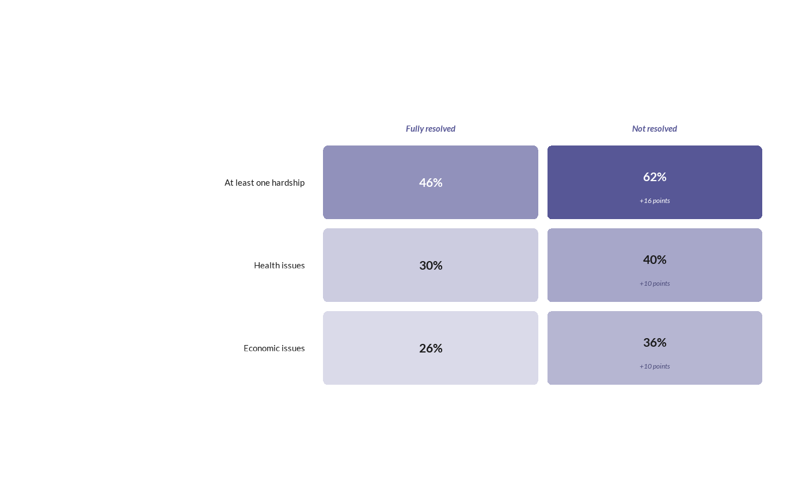

![[Experimental]](figures/lifecycle-experimental.svg)
wjp_cards() draws a grid of rounded cards, one per row and column
combination, colored on a sequential scale by their value, with the value
printed in each card and, optionally, its difference from a reference card
printed below it. Rows are labeled at the left and columns at the top.
Usage
wjp_cards(
data,
rows,
cols,
target,
labels = NULL,
deltas = NULL,
ref = c("row", "col", "none"),
limits = NULL,
colors = c("#ECECF4", "#575796"),
label_color = "auto",
card_height = 48,
card_gap = 6,
radius = 3,
label_width = 170,
value_size = 16,
delta_size = 9,
card_width = NULL,
width = NULL,
label_gap = 12,
label_size = 11,
label_colour = "#1A1A1A",
label_lineheight = 1.22,
header_size = 11,
header_fontface = "bold.italic",
header_colour = NULL,
header_gap = 7,
header_lineheight = 1.2,
value_fontface = "bold",
value_color = "#1A1A1A",
delta_fontface = "italic",
delta_color = "#4B4B7A",
min_shade = 0.12,
dark_threshold = 0.55,
row_order = NULL,
col_order = NULL,
margins = NULL,
ptheme = WJP_theme()
)Arguments
- data
Data frame containing the data to plot.
- rows
String. Column name of the variable with the row labels.
- cols
String. Column name of the variable with the column labels.
- target
String. Column name of the variable with the values (they set the colors and the default differences).
- labels
String. Column name of the variable with the printed values. Default is
NULL(rounded percentages oftarget).- deltas
String. Column name of the variable with the printed differences. Default is
NULL(computed fromtargetandref).- ref
String. Reference cards:
"row"(first row, default),"col"(first column), or"none".- limits
Numeric vector of length 2 with the range of the color scale. Default is
NULL(range of the rounded values).- colors
Character vector of length 2 with the colors of the low and high ends of the scale. Default is
c("#ECECF4", "#575796").- label_color
Color of the values and differences:
"auto"(default: white on dark cards,value_coloranddelta_colorotherwise) or one color.- card_height
Numeric. Height of a card, in points. Default is
48.- card_gap
Numeric. Gap between cards, in points. Default is
6.- radius
Numeric. Corner radius of the cards, in points. Default is
3.- label_width
Numeric. Width of the row label column, in points. Default is
170.- value_size
Numeric. Size of the values, in points. Default is
16.- delta_size
Numeric. Size of the differences, in points. Default is
9.- card_width
Numeric. Width of a card, in points. Default is
NULL(120, or the width that fillswidth).- width
Numeric. Total width of the figure, in points; cards take the space left by the label column. Default is
NULL.- label_gap
Numeric. Gap between the row labels and the cards, in points. Default is
12.- label_size
Numeric. Size of the row labels, in points. Default is
11.- label_colour
String. Color of the row labels. Default is
"#1A1A1A".- label_lineheight
Numeric. Distance between the baselines of label lines, in multiples of the label size. Default is
1.22.- header_size
Numeric. Size of the column headers, in points. Default is
11.- header_fontface
String. Font face of the column headers. Default is
"bold.italic". Weight faces such as"semibold.italic"are accepted (seewjp_fonts()).- header_colour
String. Color of the column headers. Default is
NULL(colors[2]).- header_gap
Numeric. Distance from the baseline of the last header line to the cards, in points. Default is
7.- header_lineheight
Numeric. Distance between the baselines of header lines, in multiples of the header size. Default is
1.2.- value_fontface
String. Font face of the values. Default is
"bold".- value_color
String. Color of the values on light cards. Default is
"#1A1A1A".- delta_fontface
String. Font face of the differences. Default is
"italic".- delta_color
String. Color of the differences on light cards. Default is
"#4B4B7A".- min_shade
Numeric between 0 and 1. Shade of the lowest value. Default is
0.12.- dark_threshold
Numeric between 0 and 1. Shade from which texts turn white with
label_color = "auto". Default is0.55.- row_order, col_order
Character vectors with the order of the rows (top to bottom) and columns (left to right). Default is
NULL(order of first appearance).- margins
Numeric vector of four margins (top, right, bottom, left), in points. Default is
NULL(room for the headers on top, 4 points below).- ptheme
ggplot theme to apply. Default is
WJP_theme().
Details
The function expects one row per card: the row label in rows, the column
label in cols, and the value in target. Rows and columns are drawn in
order of first appearance, or in the order given by row_order and
col_order.
Reference and differences. With ref = "row", the cards of the
first row are the references of their columns; with ref = "col", the cards
of the first column are the references of their rows. Reference cards show
their value centered; the other cards show the value and, below it, the
difference from their reference: the deltas column as given or, when
deltas is NULL, the difference between the rounded values in
percentage points (e.g., "+16 points"). ref = "none" draws values only.
A card with an empty or missing delta also shows its value centered.
Colors. The fill of each card mixes colors[1] and colors[2] in
RGB space (see scale_fill_wjp_seq()) at
min_shade + (1 - min_shade) * (value - limits[1]) / diff(limits). With
label_color = "auto", texts on cards past dark_threshold are white.
Geometry in points. Cards are card_height points high,
card_width points wide (or as wide as a figure of width points allows),
and card_gap points apart, with corners of radius points. Row labels are
wrapped to label_width - 4 points and right-aligned label_gap points
before the cards; column headers are wrapped to the card width minus 8
points and their last line sits header_gap points above the cards. The
chart has a definite size, so wjp_save() needs no width or height.
Text widths are measured with systemfonts when it knows the font
family (see wjp_fonts()), and estimated otherwise.
Examples
# Always load the WJP fonts
wjp_fonts()
# Hardships by outcome of the problem (fictional data)
cards <- data.frame(
hardship = rep(c("At least one hardship", "Health issues", "Economic issues"), each = 2),
outcome = rep(c("Fully resolved", "Not resolved"), 3),
value = c(46, 62, 30, 40, 26, 36)
)
wjp_cards(
cards,
rows = "hardship",
cols = "outcome",
target = "value",
ref = "col",
width = 468
)
